Appendix E — EDA-Isa C
Code
df <- df |>
mutate(
bio_length = nchar(biography),
likes_per_video = if_else(videos_count > 0, likes / videos_count, NA_real_),
log_followers = log10(followers + 1),
log_likes_per_video = log10(likes_per_video + 1),
log_engagement = log10(awg_engagement_rate + 1e-6),
is_verified = as.factor(is_verified),
region = as.factor(region),
predicted_lang = as.factor(predicted_lang)
)Code
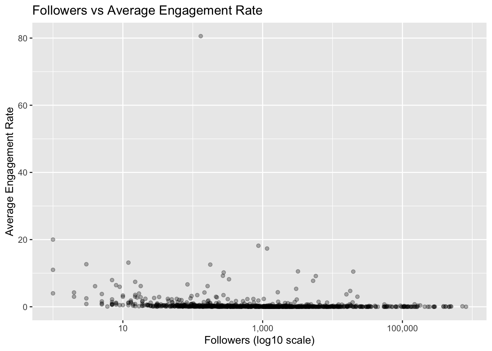
Code
df_fgroup <- df |>
mutate(
follower_group = cut(
followers,
breaks = c(0, 1000, 10000, 100000, 1000000, Inf),
labels = c("0–1k", "1k–10k", "10k–100k", "100k–1M", "1M+"),
include.lowest = TRUE
)
) |>
group_by(follower_group) |>
summarise(
mean_eng = mean(awg_engagement_rate, na.rm = TRUE),
median_eng = median(awg_engagement_rate, na.rm = TRUE),
n = n()
)
df_fgroup# A tibble: 4 × 4
follower_group mean_eng median_eng n
<fct> <dbl> <dbl> <int>
1 0–1k 0.916 0.170 517
2 1k–10k 0.270 0.0281 340
3 10k–100k 0.317 0.0214 102
4 100k–1M 0.0671 0.0110 41Code
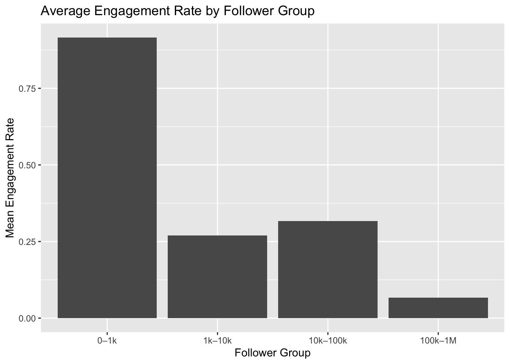
Code
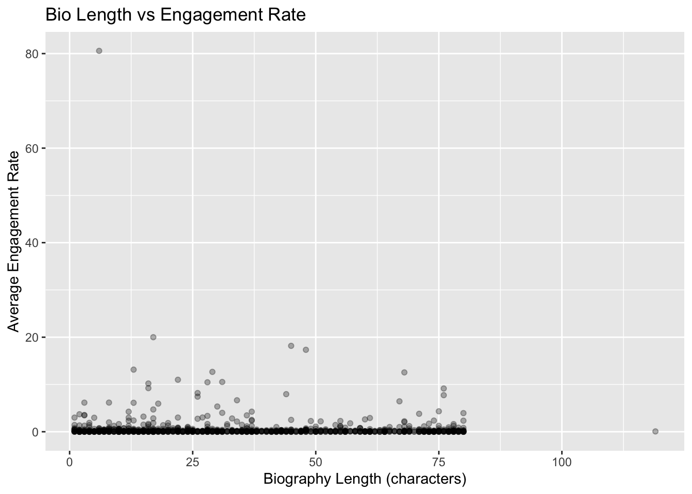
Code
library(tidyverse)
library(forcats)
library(scales)
lang_labels <- c(
"en" = "English",
"es" = "Spanish",
"ar" = "Arabic",
"ro-RO" = "Romanian",
"nl-NL" = "Dutch",
"sv-SE" = "Swedish",
"ms-MY" = "Malay",
"my-MM" = "Burmese",
"pt-BR" = "Portuguese (Brazil)",
"cs-CZ" = "Czech"
)
# 1. Top 10 languages by count
top_langs <- df |>
filter(!is.na(predicted_lang)) |>
count(predicted_lang, sort = TRUE) |>
slice_head(n = 10)
# 2. Clean data
df_lang_clean <- df |>
filter(
predicted_lang %in% top_langs$predicted_lang,
!is.na(awg_engagement_rate),
awg_engagement_rate >= 0,
awg_engagement_rate <= 5
) |>
mutate(
language = lang_labels[predicted_lang],
language = fct_reorder(language, awg_engagement_rate, median)
)
# 3. Beautiful boxplot
ggplot(df_lang_clean,
aes(x = language, y = awg_engagement_rate)) +
geom_boxplot(
outlier.alpha = 0.25,
fill = "#C6DDF0",
color = "#3A4A5A"
) +
scale_y_continuous(
labels = percent_format(accuracy = 0.1),
limits = c(0, 1)
) +
theme_minimal(base_size = 13) +
theme(
axis.text.x = element_text(angle = 45, hjust = 1),
plot.title = element_text(face = "bold"),
panel.grid.minor = element_blank()
) +
labs(
title = "Engagement Rate by Language (Top 10, Cleaned)",
x = "Language",
y = "Average Engagement Rate"
)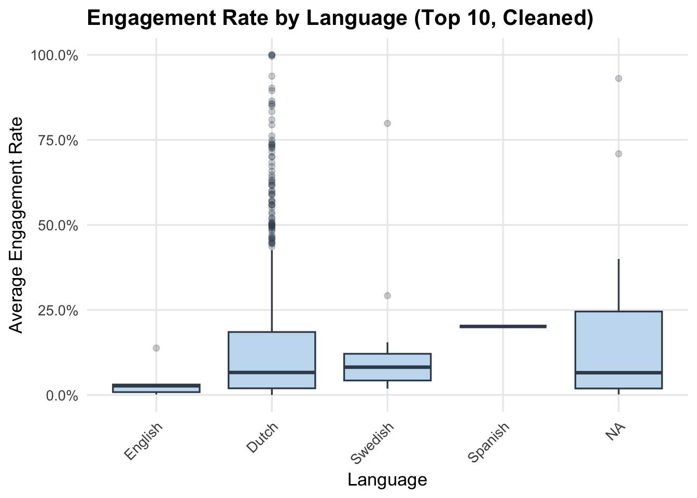
Code
ggplot(df, aes(x = followers, y = awg_engagement_rate)) +
geom_point(alpha = 0.15) +
scale_x_log10(labels = scales::comma) +
geom_smooth(method = "loess", color = "red") +
labs(
title = "Relationship Between Followers and Engagement Rate",
x = "Followers (log scale)",
y = "Engagement Rate"
) +
theme_minimal()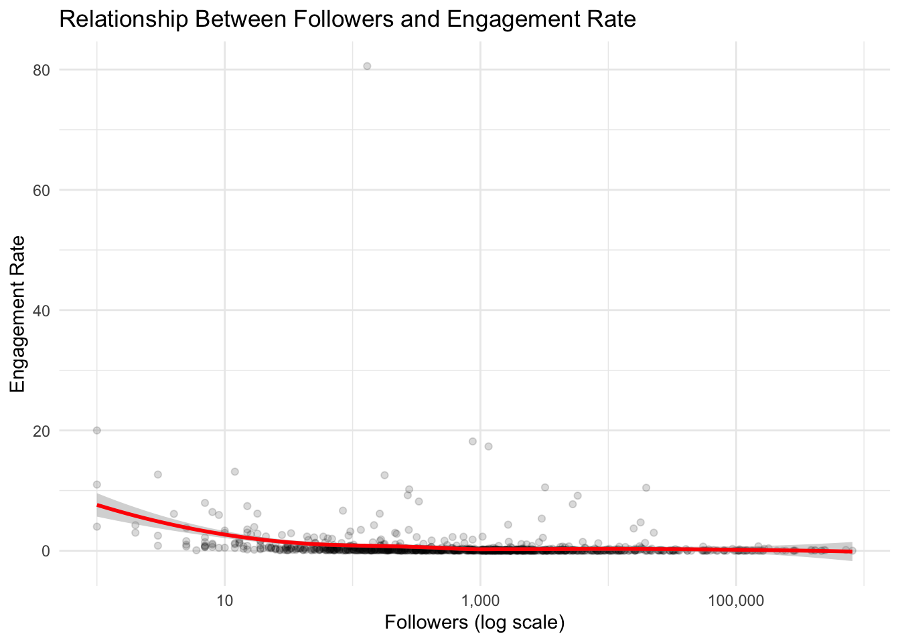
Code
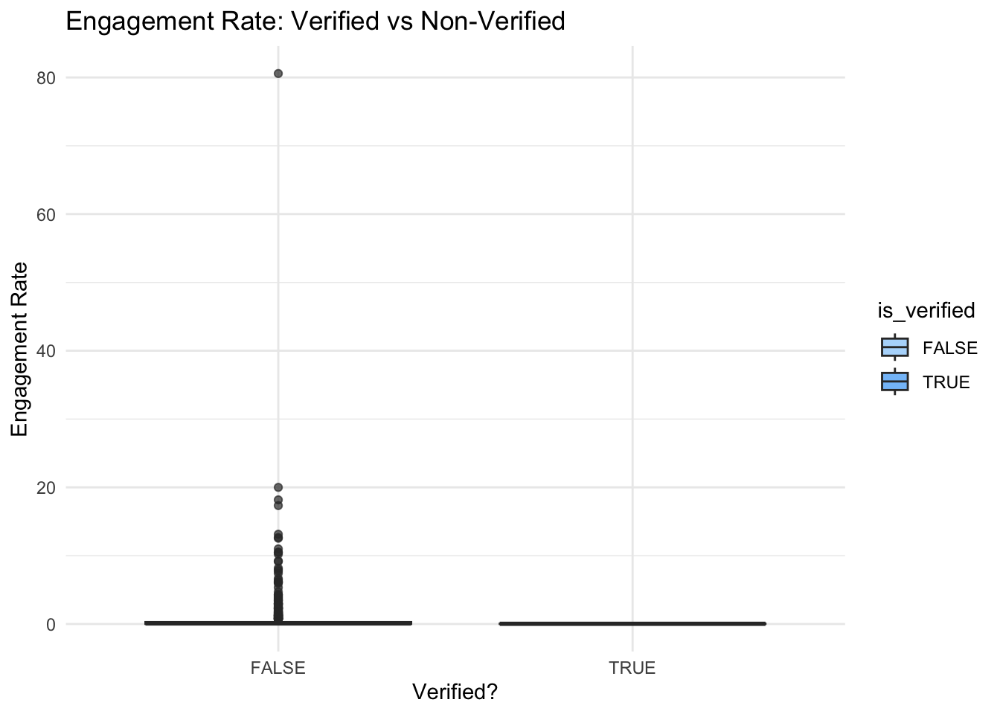
Code
library(tidyverse)
library(lubridate)
df2 <- df2 |>
mutate(
engagement_rate = (likes + comments + shares) / pmax(views, 1),
post_time_raw = coalesce(posted_time, create_time),
post_time = ymd_hms(post_time_raw, quiet = TRUE)
)
library(viridis)
df_time <- df2 |>
filter(!is.na(post_time)) |>
mutate(
hour = hour(post_time),
wday = wday(post_time, label = TRUE, abbr = TRUE)
) |>
group_by(wday, hour) |>
summarise(
mean_eng = mean(engagement_rate, na.rm = TRUE),
n = n(),
.groups = "drop"
)
ggplot(df_time, aes(x = hour, y = wday, fill = mean_eng)) +
geom_tile(color = "grey20") +
scale_fill_viridis(option = "C", direction = 1,
name = "Avg engagement") +
scale_x_continuous(breaks = 0:23) +
labs(
title = "Average Engagement Rate by Posting Time",
x = "Hour of Day",
y = "Day of Week"
) +
theme_minimal()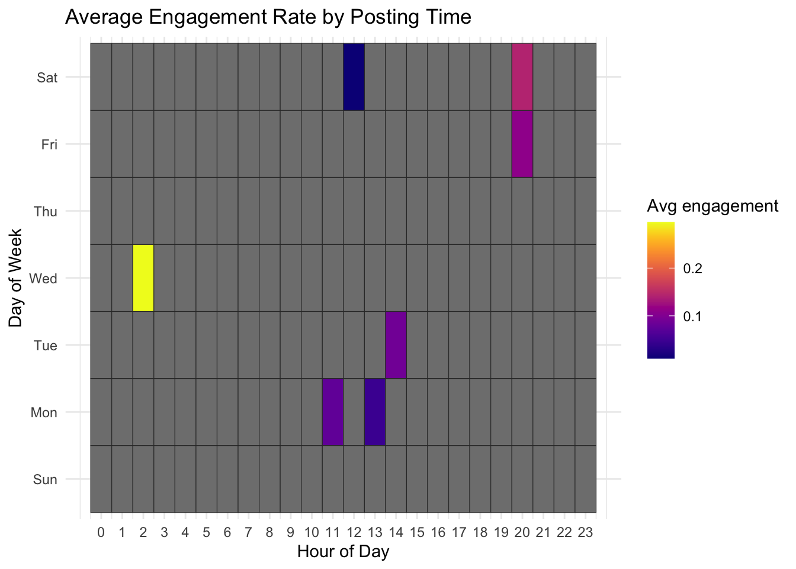
Code
library(tidyverse)
# Ensure hashtags exist and are character
df_clean <- df2 %>%
filter(!is.na(hashtags) & hashtags != "") %>%
mutate(hashtags = as.character(hashtags))
# Step 1: Split hashtag strings into individual rows
df_tags <- df_clean %>%
separate_rows(hashtags, sep = ",| |;") %>%
mutate(hashtags = str_trim(hashtags)) %>%
filter(hashtags != "")
# Step 2: Compute hashtag performance
hashtag_stats <- df_tags %>%
group_by(hashtags) %>%
summarize(
freq = n(),
avg_eng = mean((likes + comments + shares) / views, na.rm = TRUE)
) %>%
filter(freq >= 5) # filter rare hashtags to clean the plot
# Step 3: Plot
ggplot(hashtag_stats, aes(x = freq, y = avg_eng)) +
geom_point(alpha = 0.7, color = "#2C7BB6", size = 3) +
scale_x_log10() +
labs(
title = "Hashtag Performance: Frequency vs Average Engagement",
x = "Number of Videos Using Hashtag (log scale)",
y = "Average Engagement Rate"
) +
theme_minimal(base_size = 14)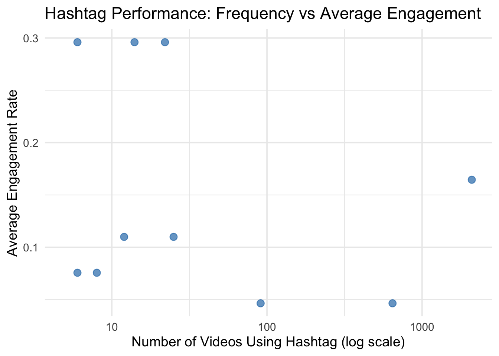
Code
library(tidyverse)
library(tidytext)
library(topicmodels)
# -----------------------------
# 0. Ensure video_id is character
# -----------------------------
df2 <- df2 %>% mutate(video_id = as.character(video_id))
# -----------------------------
# 1. Clean text
# -----------------------------
df_desc <- df2 %>%
select(video_id, description) %>%
mutate(description = tolower(description))
# -----------------------------
# 2. Tokenize
# -----------------------------
tokens <- df_desc %>%
unnest_tokens(word, description) %>%
anti_join(stop_words)
# -----------------------------
# 3. Create document-term matrix
# -----------------------------
dtm <- tokens %>%
count(video_id, word) %>%
cast_dtm(video_id, word, n)
# -----------------------------
# 4. LDA topic model
# -----------------------------
lda_model <- LDA(dtm, k = 4, control = list(seed = 123))
topics <- tidy(lda_model, matrix = "beta")
# -----------------------------
# 5. Assign topic to each video
# -----------------------------
video_topics <- tidy(lda_model, matrix = "gamma") %>%
group_by(document) %>%
slice_max(gamma, n = 1) %>%
rename(video_id = document, topic = topic) %>%
mutate(video_id = as.character(video_id)) # ensure it matches df
# -----------------------------
# 6. Merge engagement data
# -----------------------------
df_topic_eng <- video_topics %>%
left_join(df2 %>% mutate(video_id = as.character(video_id)),
by = "video_id") %>%
mutate(engagement = (likes + comments + shares) / plays)
# -----------------------------
# 7. Plot avg engagement per topic
# -----------------------------
df_topic_eng %>%
group_by(topic) %>%
summarise(avg_engagement = mean(engagement, na.rm = TRUE)) %>%
ggplot(aes(x = factor(topic), y = avg_engagement, fill = factor(topic))) +
geom_col() +
labs(
title = "Average Engagement Rate by Content Topic",
x = "Topic",
y = "Avg Engagement Rate"
) +
theme_minimal()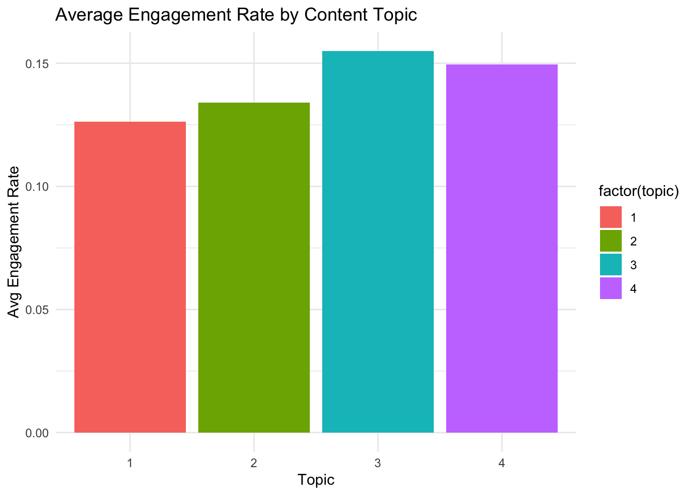
Code
topic_labels <- c(
"1" = "Lifestyle / Personal",
"2" = "Music / Trends",
"3" = "Food / Recipes",
"4" = "Dance / Challenges"
)
df_topic_eng %>%
group_by(topic) %>%
summarise(avg_engagement = mean(engagement, na.rm = TRUE)) %>%
ggplot(aes(x = topic_labels[topic], y = avg_engagement, fill = factor(topic))) +
geom_col() +
labs(
title = "Average Engagement Rate by Content Topic",
x = "Topic Category",
y = "Avg Engagement Rate"
) +
theme_minimal()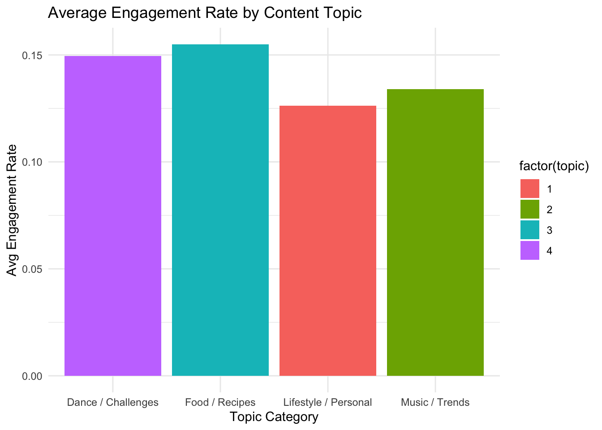
Code
library(tidyverse)
library(tidytext)
library(topicmodels)
library(ggrepel)
#------------------------------------------------
# 0. Prepare data: ensure video_id is character and engagement exists
# (Assumes df is already read from your tiktok.csv)
#------------------------------------------------
df2 <- df2 %>%
mutate(
video_id = as.character(video_id),
engagement = (likes + comments + shares) / pmax(plays, 1)
)
#------------------------------------------------
# 1. Text preprocessing for descriptions
#------------------------------------------------
df_desc <- df2 %>%
select(video_id, description) %>%
mutate(description = tolower(description))
tokens <- df_desc %>%
unnest_tokens(word, description) %>%
anti_join(stop_words, by = "word")
dtm <- tokens %>%
count(video_id, word) %>%
cast_dtm(video_id, word, n)
#------------------------------------------------
# 2. LDA topic model (k = 4 topics)
#------------------------------------------------
set.seed(123)
lda_model <- LDA(dtm, k = 4, control = list(seed = 123))
topics_beta <- tidy(lda_model, matrix = "beta") # word distributions per topic
topics_gamma <- tidy(lda_model, matrix = "gamma") # topic distributions per document
#------------------------------------------------
# 3. Get top terms per topic (for labeling and keyword plot)
#------------------------------------------------
top_terms <- topics_beta %>%
group_by(topic) %>%
slice_max(beta, n = 8) %>%
ungroup()
#------------------------------------------------
# 4. Assign each video its dominant topic and merge engagement
#------------------------------------------------
video_topics <- topics_gamma %>%
group_by(document) %>%
slice_max(gamma, n = 1) %>%
ungroup() %>%
rename(video_id = document, topic = topic) %>%
mutate(video_id = as.character(video_id))
df_topic_eng <- video_topics %>%
left_join(df2, by = "video_id") %>%
filter(!is.na(engagement))
#------------------------------------------------
# 5. Define human-readable labels for topics (EDIT if you want)
# You can adjust these based on top_terms output.
#------------------------------------------------
topic_labels <- c(
"1" = "Dance / Challenges",
"2" = "Food / Recipes",
"3" = "Lifestyle / Personal",
"4" = "Music / Trends"
)
#------------------------------------------------
# 6. Plot 1: Average engagement per topic (with SE error bars)
#------------------------------------------------
plot_topic_avg <- df_topic_eng %>%
group_by(topic) %>%
summarise(
avg_eng = mean(engagement, na.rm = TRUE),
se = sd(engagement, na.rm = TRUE) / sqrt(n()),
.groups = "drop"
) %>%
ggplot(aes(x = topic_labels[as.character(topic)],
y = avg_eng,
fill = factor(topic))) +
geom_col() +
geom_errorbar(aes(ymin = avg_eng - se,
ymax = avg_eng + se),
width = 0.2) +
labs(
title = "Average Engagement Rate by Content Topic",
x = "Topic Category",
y = "Avg Engagement Rate"
) +
theme_minimal() +
theme(legend.position = "none")
#------------------------------------------------
# 7. Plot 2: Distribution of engagement per topic (violin + jitter)
#------------------------------------------------
plot_topic_violin <- df_topic_eng %>%
ggplot(aes(x = topic_labels[as.character(topic)],
y = engagement,
fill = factor(topic))) +
geom_violin(trim = FALSE, alpha = 0.5) +
geom_jitter(width = 0.1, alpha = 0.25, size = 1) +
labs(
title = "Distribution of Engagement Rates by Content Topic",
x = "Topic Category",
y = "Engagement Rate"
) +
theme_minimal() +
theme(legend.position = "none")
#------------------------------------------------
# 8. Plot 3: Number of videos per topic
#------------------------------------------------
plot_topic_counts <- df_topic_eng %>%
count(topic, name = "n_videos") %>%
ggplot(aes(x = topic_labels[as.character(topic)],
y = n_videos,
fill = factor(topic))) +
geom_col() +
labs(
title = "Number of Videos per Content Topic",
x = "Topic Category",
y = "Video Count"
) +
theme_minimal() +
theme(legend.position = "none")
#------------------------------------------------
# 9. Plot 4: Top keywords per topic (faceted bar chart)
#------------------------------------------------
plot_top_terms <- top_terms %>%
mutate(term = reorder_within(term, beta, topic)) %>%
ggplot(aes(x = term, y = beta, fill = factor(topic))) +
geom_col(show.legend = FALSE) +
scale_x_reordered() +
facet_wrap(~ topic, scales = "free_y",
labeller = labeller(topic = topic_labels)) +
coord_flip() +
labs(
title = "Top Keywords for Each Topic",
x = "Term",
y = "Importance (beta)"
) +
theme_minimal()
#------------------------------------------------
# 10. Print or arrange plots
#------------------------------------------------
plot_topic_avg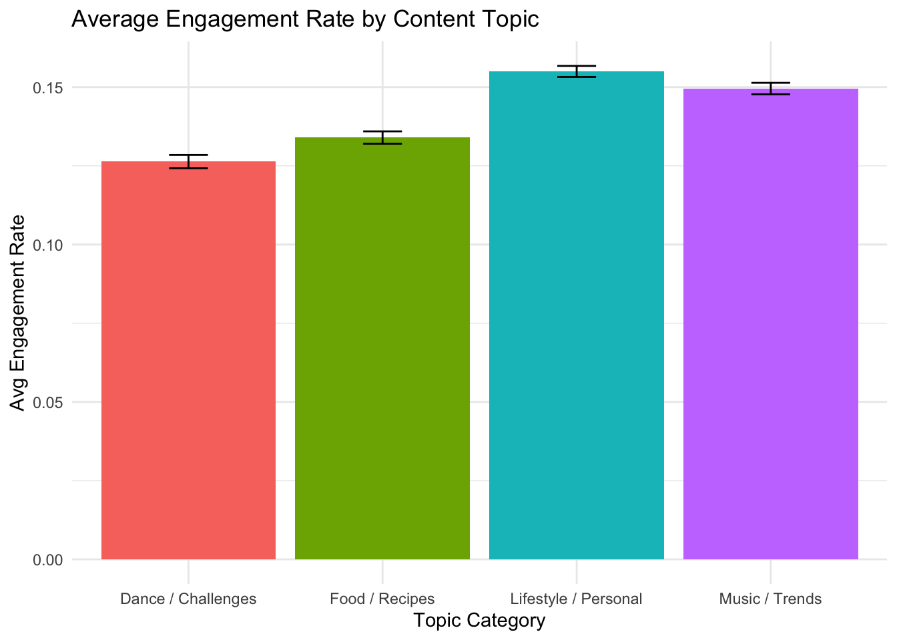
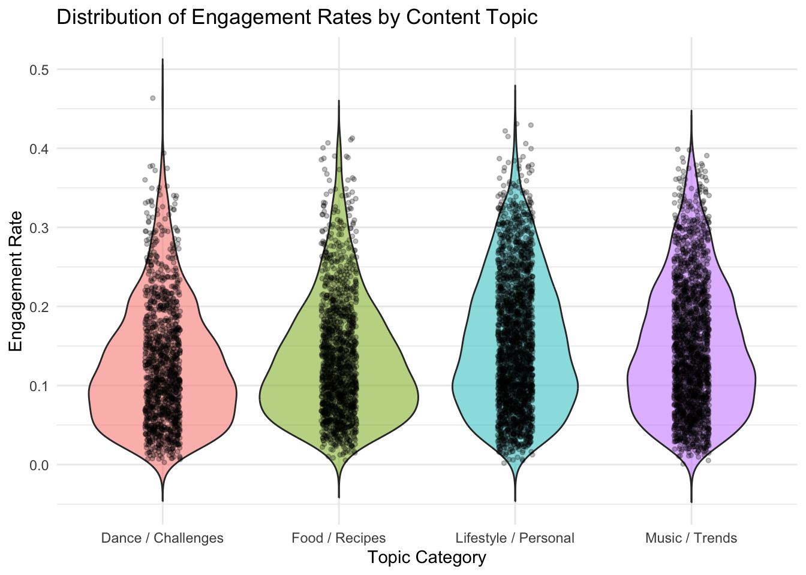
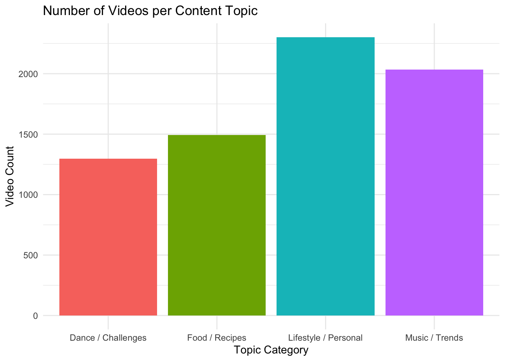
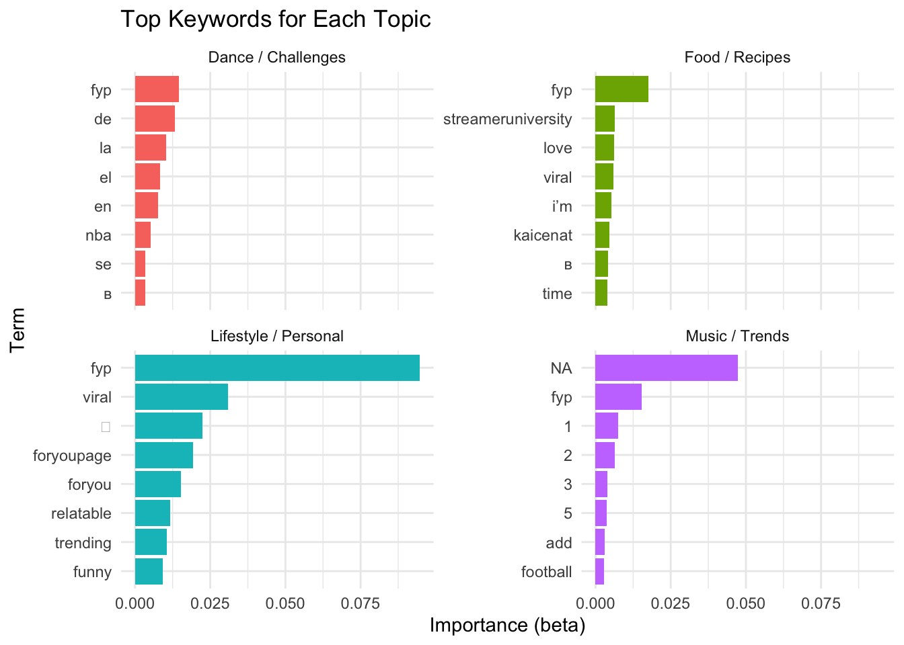
Code
library(tidyverse)
library(cld2)
df_clean <- df2 %>%
mutate(
engagement_rate = (likes + comments + shares) / plays,
detected_lang = cld2::detect_language(description, plain_text = TRUE)
) %>%
filter(!is.na(detected_lang),
!is.na(engagement_rate),
engagement_rate < 5)
top_langs <- df_clean %>%
count(detected_lang, sort = TRUE) %>%
slice_head(n = 10)
df_lang_plot <- df_clean %>%
filter(detected_lang %in% top_langs$detected_lang)
# --- Language label mapping ---
lang_labels <- c(
"es" = "Spanish",
"fr" = "French",
"ru" = "Russian",
"pt" = "Portuguese",
"it" = "Italian",
"en" = "English",
"no" = "Norwegian",
"sr" = "Serbian",
"xx-Qaai" = "Undetermined",
"de" = "German"
)
# --- Plot ---
ggplot(df_lang_plot,
aes(x = reorder(detected_lang, engagement_rate, FUN = median),
y = engagement_rate)) +
geom_violin(trim = TRUE, alpha = 0.6, fill = "#BDD7EE", color = "gray40") +
geom_boxplot(width = 0.15, outlier.shape = NA, fill = "white", color = "black") +
stat_summary(fun = median, geom = "point", size = 2.8, color = "black") +
scale_x_discrete(labels = lang_labels) +
labs(
title = "Engagement Rate by Detected Language (Top 10)",
x = "Language",
y = "Engagement Rate"
) +
theme_minimal(base_size = 16) +
theme(
plot.title = element_text(size = 20, face = "bold", hjust = 0.5),
axis.text.x = element_text(angle = 35, hjust = 1, size = 13),
axis.text.y = element_text(size = 13),
panel.grid.minor = element_blank()
)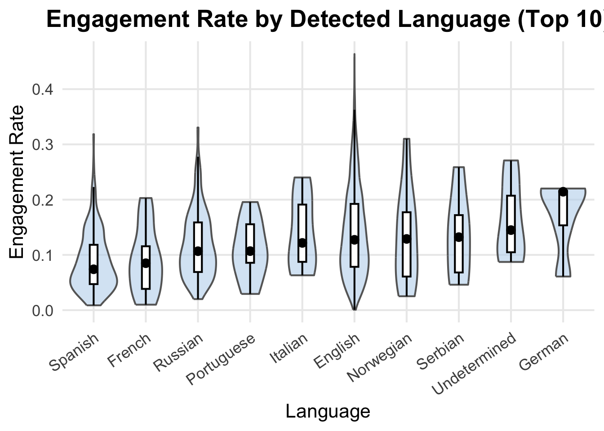
Code
library(tidyverse)
library(lubridate)
df_time <- df2 %>%
mutate(
posted_time = as_datetime(create_time),
dow = wday(posted_time, label = TRUE, week_start = 1),
hour = hour(posted_time),
engagement = (likes + comments + shares) / pmax(plays, 1)
) %>%
filter(
!is.na(dow),
!is.na(hour),
engagement >= 0,
engagement < 1
)
df_time_summary <- df_time %>%
group_by(dow, hour) %>%
summarise(
avg_eng = mean(engagement, na.rm = TRUE),
.groups = "drop"
)
ggplot(df_time_summary,
aes(x = hour, y = dow)) +
geom_point(aes(size = avg_eng, color = avg_eng),
alpha = 0.85) +
scale_color_viridis_c(option = "C") +
scale_size(range = c(3, 12)) +
scale_x_continuous(breaks = 0:23) +
labs(
title = "Engagement by Posting Time",
subtitle = "Bubble size & color show average engagement rate",
x = "Hour of Day",
y = "Day of Week",
color = "Avg Engagement",
size = "Avg Engagement"
) +
theme_minimal(base_size = 15) +
theme(
plot.title = element_text(size = 20, face = "bold", hjust = 0.5),
plot.subtitle = element_text(size = 13, hjust = 0.5),
axis.text.x = element_text(angle = 45, hjust = 1)
)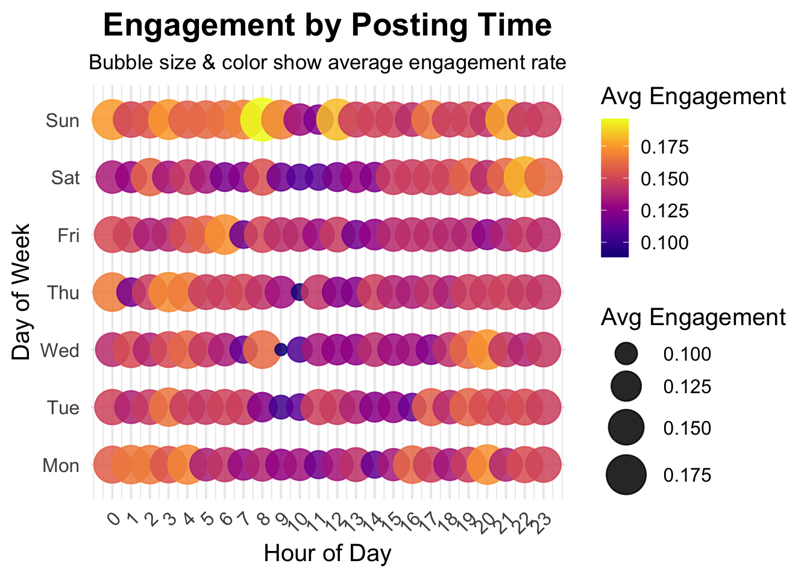
Code
thr <- quantile(df_time_summary$avg_eng, 0.8, na.rm = TRUE)
df_time_summary2 <- df_time_summary %>%
mutate(
is_top = avg_eng >= thr
)
ggplot(df_time_summary2,
aes(x = hour, y = dow)) +
geom_point(aes(size = avg_eng,
color = avg_eng,
alpha = is_top),
show.legend = TRUE) +
scale_alpha_manual(values = c(`FALSE` = 0.2, `TRUE` = 1), guide = "none") +
scale_color_viridis_c(option = "C") +
scale_size(range = c(2, 12)) +
scale_x_continuous(breaks = seq(0, 23, by = 2)) +
labs(
title = "Best Posting Windows on TikTok",
subtitle = "Highlighted bubbles show top 20% engagement times",
x = "Hour of Day",
y = "Day of Week",
color = "Avg Engagement",
size = "Avg Engagement"
) +
theme_minimal(base_size = 15) +
theme(
plot.title = element_text(size = 20, face = "bold", hjust = 0.5),
plot.subtitle = element_text(size = 13, hjust = 0.5),
axis.text.x = element_text(angle = 45, hjust = 1)
)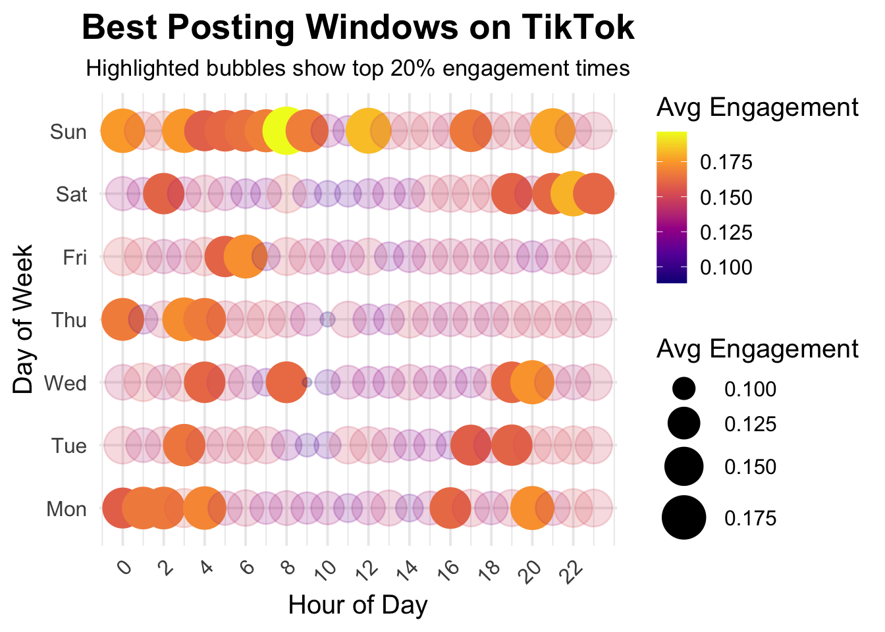